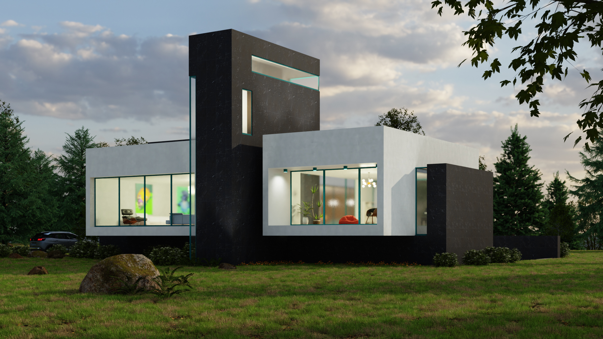

Spenser House
Creating 3D models is a skill I developed personally during college. Using rendering engines taught me the complicated but fascinating process of elaborating geometry and shaders to replicate the real world, from painstakingly copying building plans to properly using assets. Kitchen Living room Portico Exterior Designed by architect Guy Peterson, Spenser House is a residence made in the Sarasota School of Architecture’s signature style.
Modern Home
Front view Two stone block towers support this house, giving it the feeling of floating above ground. The main living spaces are left open plan, with large windowed walls funneling views towards both the front and the back, helping maintain privacy. The windows are also placed to provide features at night, where they will glow brightly against the dark stone construction, enhancing the building’s volume. Rooftop terrace Requested spaces for this house were: a living area with kitchen, a balcony, and a central courtyard.

Scale Air Campaign
This advertising campaign is for an imaginary model aircraft meetup in Montreal. It supports the event’s design needs, and is meant to attract visitors. Because of its particular location, part of the campaign is bilingual. Apparel This apparel is designed to be sold as a fundraiser at the event. It was first sketched out on paper, then made in Illustrator and mocked up in Photoshop.
Asian Garden
I created this scene to challenge myself to represent nature. It taught me how to use software light, and how to texture natural elements like water to make a good-looking render. An asset software called Bridge helped speed the composition process, and the image was rendered from Blender. Early on, the details are blocked in, but the lighting needs work. The fireflies are from a non-denoised draft render in Cycles.